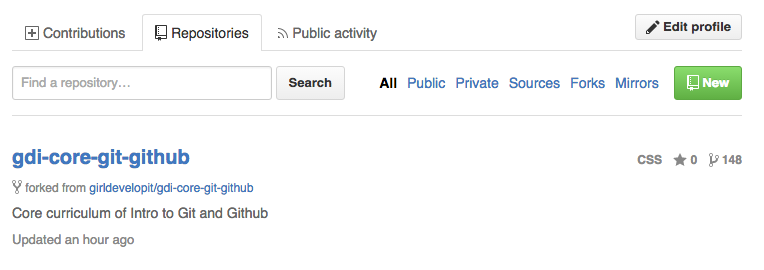
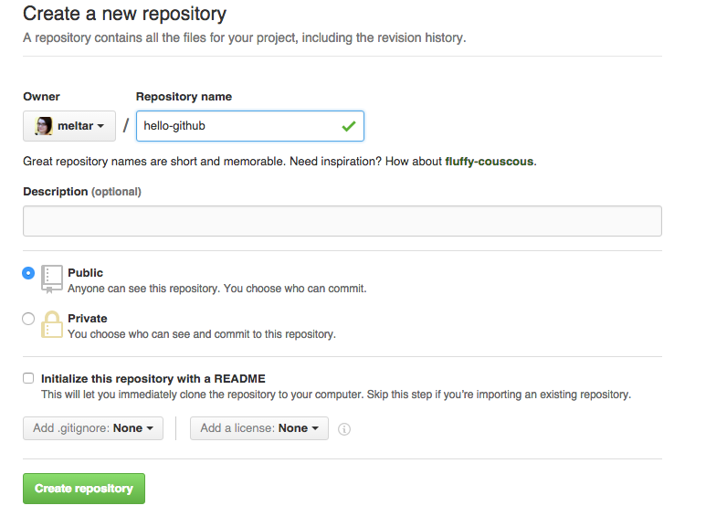
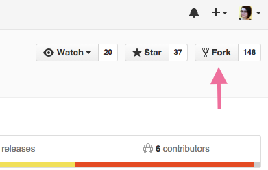
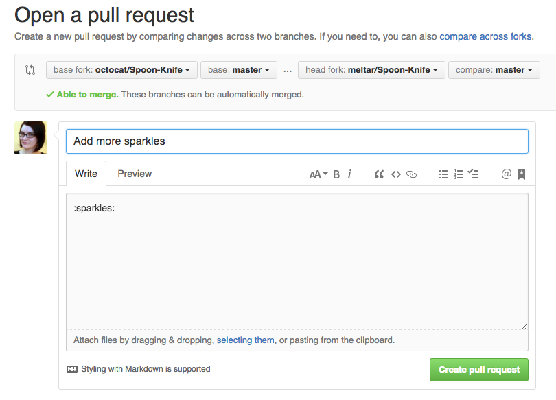

Intro to Git and Github
Welcome!
Girl Develop It is here to provide affordable and accessible programs to learn software through mentorship and hands-on instruction.
Some "rules"
- We are here for you!
- Every question is important
- Help each other
- Have fun
Welcome!
Tell us about yourself.
- Who are you?
- What do you hope to get out of the class?
What we will cover today
- What is version control and why should we care?
- Basics of Git: the essential commands
- GitHub (or, a little Git between friends)
What is version control?
Version control allows you (and your team) to…
Collaborate
Create anything with other people, from academic papers to entire websites and applications.
Track and revert changes
Mistakes happen. Wouldn't it be nice if you could see the changes that have been made and go "back in time" to fix something that went wrong?
You already manage versions of your work!
Do you have files somewhere that look like this?
Resume-September2013.docx
Resume-for-Duke-job.docx
ResumeOLD.docx
ResumeNEW.docx
ResumeREALLYREALLYNEW.docx
You invented your own version control!
But, we can do it better with Version Control tools
Brief history of Version Control
1990s — CVS (Concurrent Version Systems)
2000s — SVN (Apache Subversion)
2005 — Git
Chapter 1: Git is Born
The first commit, April 2005
commit e83c5163316f89bfbde7d9ab23ca2e25604af29
Author: Linus Torvalds <torvalds@ppc970.osdl.org>
Date: Thu Apr 7 15:13:13 2005 -0700
Initial revision of "git", the information manager from hell
Version Control Types
Centralized Version Control
Examples: CVS, Subversion (SVN)
Distributed Version Control
Examples: Git, Mercurial
Centralized Version Control

One central server, each client (person) checks out and merges changes to main server
...NOT how Git works!
Distributed Version Control

Each client (person) has a local repository, which they can then reconcile with the main server.
...this is how Git does it!
Why Use Git?
- Fast! Access information quickly and efficiently.
- Distributed! Everyone has her own local copy.
- Mind-bogglingly scalable! Enables potentially thousands (millions!) of developers to work on single project.
- Local! You don't need a network connection to use it. You only need a remote server if you want to share your code with others (e.g., using GitHub).
- Branches! Keep your coding experiments separate from code that is already working.
- Everyone has a local copy of the shared files and the history.
Installation and Setup
Install git

Installation and Setup
Setup name and email in git config
$ git config --global user.name "Your Name Here"
# Sets the default name for git to use when you commit
$ git config --global user.email "your_email@example.com"
# Sets the default email for git to use when you commit
$ git config --list
Installation and Setup
Setup SSH keys
SSH keys allow you to interact with your Git server without having to type your username and password all the time.
Installation and Setup
Setup the Default Text Editor
By default Git is set up to use Vim as the text editor.
(esc + :q or :q! to get out of Vim)
Follow these instructions to change your default text editor to whatever you prefer.
Your First Local Repository
Go to home directory
cd ~/
pwd #make sure you're in your home directory
Create a "working directory"
mkdir my-repo
cd my-repo
Initialize repository with Git
git init
git status
Add Files
Create a readme.md file in your new folder
Check repo status
git status
Tell Git to track our new file
git add readme.md
git status
File is now tracked by Git
Changes and Commits
Open readme.md and add some more text
git status
Stage and commit the change
git add readme.md
git commit -m "First commit. Added README to repository."
A good commit message acts like a headline to a newspaper article (but not clickbait!)
What did we just do?
How is this all different than just saving a file?
- When we add a new file, we tell Git to add the file to the repository to be tracked.
- This is also called staging a file. A snapshot of our changes is now in the staging area (aka the index, aka the cache), ready to be saved.
- A commit saves the changes made to a file, not the file as a whole. The commit will have a unique ID (hash) so we can track which changes were committed when and by whom.
Look at Your Progress
git log
commit [HASH HERE]
Author: Your name <you@your-email.com>
Date: [DATE HERE]
First commit. Added README to repository.
Let's Try It!
- Make changes to
readme.mdand make some more commits. - Add another file (or image!) to your project and commit that.
- Change more than one file at a time, and practice making commits where you stage only one file, or both files together.
Don't forget to run git status regularly so that you can see what is happening at each stage!
Nobody's Perfect
Undoing local changes
If you haven't staged/committed yet
Open readme.md and make some changes to the file.
git checkout readme.md
Look at readme.md. Your changes are gone. You've gone back to the previous commit state.
Nobody's Perfect
Remove a file from staging
Create new file my_new_file.txt
git add my_new_file.txt
git reset my_new_file.txt
The file is removed from staging, but your working copy will be unchanged.
Nobody's Perfect
Undoing staged changes
Open readme.md and add some new text
git add readme.md
git reset HEAD readme.md
git status ## your changes were unstaged
git checkout readme.md
Look at readme.md. Your changes are gone and the file is removed from staging.
Nobody's Perfect
Undoing committed changes
Git lets you go back to any previous commit.
Open readme.md and add some new text
$ git add readme.md
$ git status
$ git commit -m "Make a change I will soon regret making"
$ git log --oneline
Okay, I see the change… now how do I remove it?
Nobody's Perfect
Undoing committed changes
$ git revert 53d23c4
# Your default editor will open here
# you can just save it and close it as is.
$ git log --oneline
Notice that the original, regrettable commit is still there, but now you also have another commit that undoes the changes introduced by the original one.
To Track or not to Track?
You decide what goes into version control.
You can—and should!—leave some things out.
libraries, .dotfiles, api keys...
Git shows you an easy way to do this: .gitignore
Git Structure & Workflow
Now let's look at the bigger picture.

Git Structure & Workflow
Or, put another way...

Branching
- Develop different code on the same base
- Conduct exploratory work without affecting the work on master branch
- Incorporate changes to your master branch only when you are ready
Branching
Create a new branch called version2
git checkout -b version2
Add new lines to readme.md
git add readme.md
git commit -m "Adding changes to version 2"
Branching
Switching branches
See all branches. Branch with * is active
git branch
Switch to master and look at readme.md
git checkout master
Switch to version2 and look at readme.md
git checkout version2
Merging
Merge to get changes from one branch into another*
Switch to master and merge changes
git checkout master
git merge version2
*rebase is another option, but will not be covered in this workshop
Merging
Merge conflicts
Change first line in readme.md in master branch
git add readme.md
git commit -m "Changing first line in master"
Change first line in readme.md in version2 branch
git checkout version2
# open readme.md and change first line
git add readme.md
git commit -m "Changing first line in version2"
Merging
Merge conflicts, cont.
Merge from master into version2
git merge master
You will be notified of a conflict. Go to the file and fix the problem. Then commit your edits.
GitHub
- Launched in 2008
- Leader in Social Coding
- GitHub is a commercial site that allows users to host Git repositories publicly and privately
- Open source projects host or mirror their repositories on GitHub
- Post your own code for others to use or contribute to
- Use and learn from the code in other people's repositories
GitHub
Create your first repository
GitHub
Create your first repository
GitHub
ReadME
While a README isn't a required part of a GitHub repository, it is a very good idea to have one. READMEs are a great place to describe your project or add some documentation such as how to install or use your project. You might want to include contact information - if your project becomes popular people will want to help you out.
GitHub
Get Local Repository of GitHub Repo
cd ../ # Back in root directory
mkdir hello-github
cd hello-github
git init
git remote add origin git@github.com:username/NAME-OF-REPO
git pull origin master
GitHub
Push to GitHub Repo
Edit the ReadMe file
git add README
git commit -m "Updating readme file"
git push origin master
Go look at your github repo online
GitHub
Pulling from remote repository
If you are working with a team, you want to make sure that you have everyone's changes before pushing your changes to the GitHub repo
# Commit local changes
git commit -m "My latest commit"
# Pull changes other people have made
git pull origin master
# Fix any conflicts (see merge conflicts above) and commit
git commit -m "Fixing merging conflicts"
# push local changes to GitHub
git push origin master
Forking
- There are MILLIONS of public repositories on GitHub
- If you want to use or contribute to a repository, you can fork it.
Forking
Forking
Cloning
Clone to get a local repository of your fork
cd ../
git clone https://github.com/username/FORKED-REPO-NAME.git
cd FORKED-REPO-NAME
git remote add upstream https://github.com/original-username/FORKED-REPO-NAME.git
# Assigns the original repository to a remote called "upstream"
git fetch upstream
# Pulls in changes not present in your local repository, without modifying your files
Pull Requests
- After you fork and clone a repository all pushed changes will go to your fork
- These changes will not affect the original repository
- If you would like to get your changes to be incorporated into the original repo, you can submit a pull request
Starting a pull request
Previewing and sending pull request
Managing pull requests
How to manage pull requests is out of the scope of this short workshop, but you can learn more from the Github Collaborating Tutorials